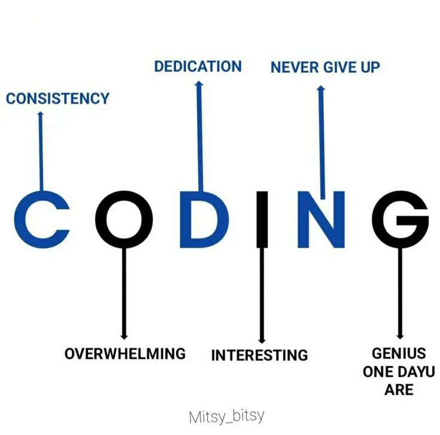

YOUTH ANNOUNCEMENTS WEBSITE
YOUTH WEB BASED APPLICATION
A 6 WEEK, NO-HOMEWORK BIBLE STUDY
Working with the churches, KAYO aims:
a) to make God's Good News known to children, young people and families and
b) to encourage people of all ages to meet God daily through the Bible and prayer so that they may
. come to personal faith in our Lord Jesus Christ,
. grow in Christian maturity and
. become both committed church members and servants of a world in need.
1. Use a nice interactive application which is accessible to people for example social media apps like Youtube
channels and whatsapp channels.
2. Use symbols in representing bible verses in real life for better content delivery and monetization on above mentioned platforms
We must think innovately in order to keep up with time by using what we have for our benefit
and everyone's benefit
3. Take advantage of technology this is why I chose to implement a website to convey this conversation.
Programming requires:1. Consistency in terms of monetizing content
2. It may be at times be overwhelming
3. Dedication of body and mind
4. Interest in what one is performing
5. Never giving up
6. Genius one day U are

NB:Innovation distinguishes between a leader and a follower-Steve Jobs
When the PC is Slow or Freezing
-Clear system temporary files
-Remove user temp files
-Delete cached program files
-Run Disk Cleanup
-Identify high CPU/RAM usage
-Manage startup applications
-Repair corrupted systems files
-Fix disk issues
When the Internet isn't WorkingIP/website-test connectivity
-Show network info
renew Refresh the MAC address
/flushdns-clear DNS resolution
domain-check DNS resolution
domain Identify connection drop points